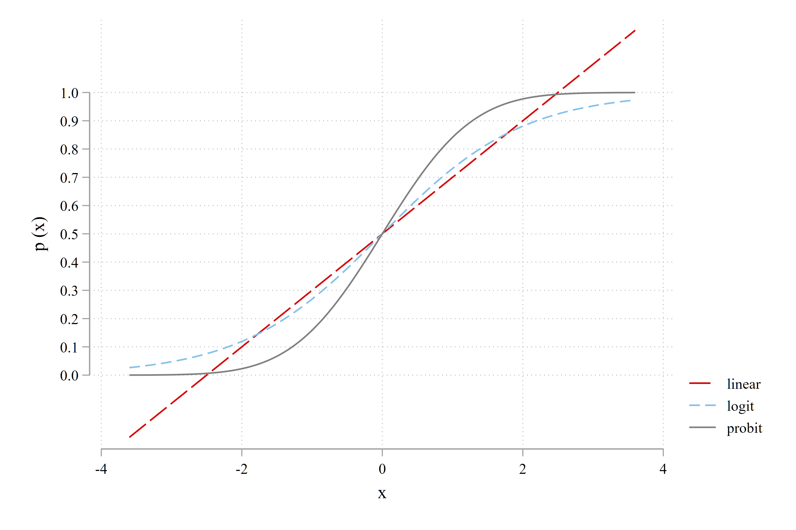
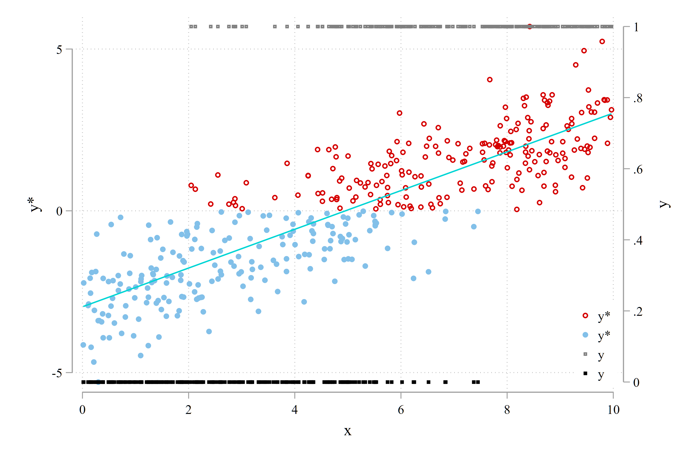
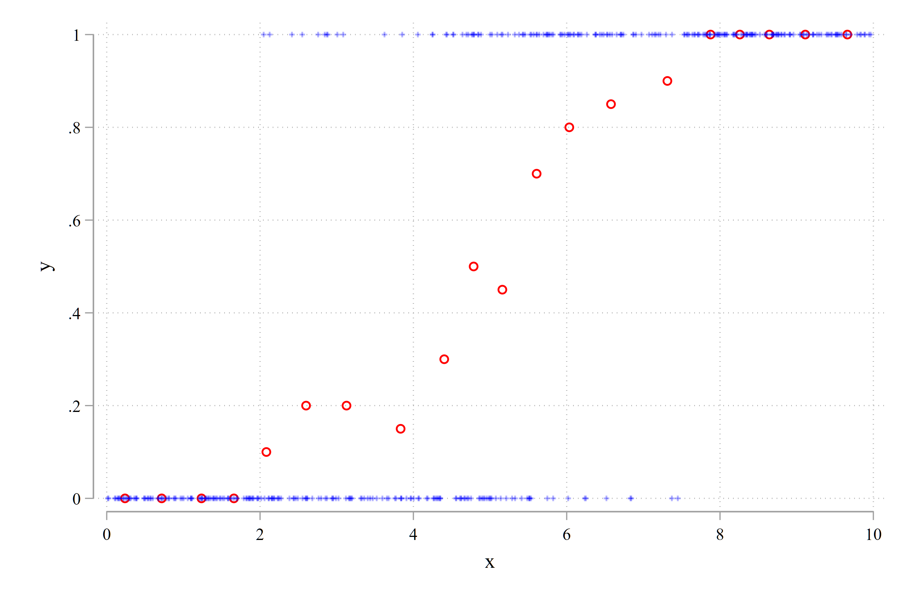
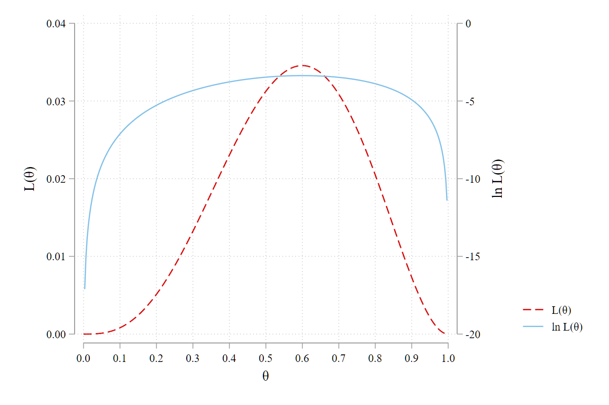

36 从回归模型到概率模型
36.1 简介
对于连续变量，我们主要关注「条件期望」，对应的模型称为「条件期望模型，简称 CEM」。然而，当被解释变量是 \(0/1\)，或类别变量 (如, \(1, 2, \cdots, 5\)) 等“定性响应变量” (qualitative response variables)，以及「离散+连续」混合分布的变量 (如归并数据) 时，我们关注的重点便需转向「条件概率」，此时「条件概率模型，简称 CPM」可能是更好的选择，通常采用 MLE 进行估计。
本章将介绍此类模型的基本建模原则。从 CEM 转向 CPM，最核心的变化是建立 \(y\) 的条件概率与 \(x\) 之间的关系，即 \(P\left(y_{i}\,|\,\mathbf{x}_{i}\right) = g\left(\mathbf{x}_{i} ; \theta\right)\)。原因有二：
其一，在许多情况下，我们无法定义定性变量的期望值（例如，有序变量和多元选择变量）；
其二，即使可以定义其期望值（例如，计数数据既可以被视为定性变量也可以被视为定量变量），但基于条件概率的方法可以提供更多的信息：一旦概率已知，期望值就完全确定了；反之则未必成立。换言之，从随机变量的概率分布入手，我们可以获取更多的信息，而期望值只是这众多备选信息的一个维度。
36.2 微观数据的分类
微观数据大体可以分为「定性数据」和「定量数据」两类。后者也称为分类数据。定性数据都是离散数据，主要有三类：二元、多项和有序。定量数据既可以是离散的也可以是连续的，例如，实证分析中，我们可以把年龄 (age) 视为离散变量 (通常会用一组虚拟变量来刻画它，如 i.age)，也可以当做连续变量 (如 c.age，或经过对数转换后再纳入模型，如 lnage)。类似的变量还包括用于记录时间先后的年度变量，我们可以使用 i.year 表示一组年度虚拟变量，也可以使用 c.year 表示时间趋势。
定量数据也可以根据其取值范围或数据生成过程分为「非受限数据」和「受限数据」。这里举例说明后者：其一，有些变量只能取非负值，例如，公司规模 (总资产或销售额)、人均 GDP、新冠感染人数等；其二，有些定量变量只能观测到其被归并 (censoring)、截断 (truncated) 或分组汇总后的数据，这也是导致样本选择/自选择偏误的主要来源。当此类变量是因变量时，便引申出各类「受限因变量模型」，如 Tobit, Heckman, Two-part 模型等。
36.2.1 定性数据
这类变量往往只有几个有限的取值，如 \(\{0, 1\}\), \(\{1,2,3,4,5\}\) 等，其背后往往隐含着某类选择行为或定性判断 (分类) 行为，因此，通常会采用条件概率模型加以分析。
Q1. 二元变量 (Binary Variables)
二元变量仅包含两种可能的结果：\(0\) 和 \(1\)，有时简称为「0/1 变量」，通常采用 Logit 或 Probit 模型加以分析 ([R] logit，[R] probit)。研究中的典型问题诸如：公司是否支付股利？本科毕业后是否留学？央行是否提高基准利率？等等。
Q2. 多项类别变量 (Multinomial Variables)
多项类别变量具有三个以上的结果，并使用一组互斥的无序类别标记加以区分。这些变量可以用来描述一个人的职业选择 (公务员/教师/投行/创业；\(y=1,2,3,4\))、公司的融资行为 (内部融资/发行债券/发行股票；\(y=1,2,3\))。注意，这里的 \(1\), \(3\) 等数字只是用于标记不同的选择类型，并无大小的区别，因为我们完全可以用 \(A, B, C\) 来代替 \(1,2,3\) 作为类别的标记符号，也可以根据自己的喜好调整不同选择类型的编号。此类模型多使用多元 Logit 或多元 Probit 模型进行分析 ([R] mlogit，[R] mprobit)。如果只有两个类别，则简化为二元变量。
Q3. 有序变量 (Ordered Variables)
有序变量 (序别变量) 在形式上与多元类别变量相似，但变量的各个取值有大小之分。如「幸福感」取值为 \(1,2,3,4,5\)，分别对应“很不幸福、不幸福、一般、幸福、很幸福”。需要注意的是，这里虽然用一组递增的数字来表示幸福程度的相对高低，但并未定义组间的差异程度，即“\(5\)”与“\(4\)”之间的幸福感差异并不必然等于“\(3\)”与“\(2\)”之间的差异程度。 类似的例子还包括公司债券的信用评级(AAA, AA, A, BBB, BB, ……)，对某个议案或提议的赞同程度 (非常赞同/赞同/中立/不赞同/强烈反对)。此类模型多使用有序 Logit 或 Probit 模型进行分析 ([R] ologit，[R] oprobit)。
36.2.2 定量数据 (Quantitative Data)
通常，我们假设定量因变量具有如下特征：(1) 它可以在 \((-\infty, +\infty)\) 实数范围 (\(\mathbb{R}\)) 内取值；(2) 其观察值是从总体中随机抽取的。第一个假设常用于线性回归模型，即给定解释变量，因变量的条件分布为正态分布。第二个假设意味着我们手头的样本能够很好地反应总体特征，不存在样本选择偏差。遗憾的是，在微观数据分析中，上述两个假设经常无法满足，由此引申出 Tobit 模型，Heckman 自选择模型等方法，以纠正可能存在的偏差。
C1. 非负变量 (Non-negative Variables)
多数情况下，原始变量的取值都是非负的。例如，高管薪酬和资产价格都是非负的，因此都不服从严格意义上的正态分布，但它们的对数转换可能更接近正态分布。又如，一年内交通违规违法的次数、企业专利申请个数等也都是非负值，且存在大量取值为 0 的观察值。此外，有些比率变量的取值必须介于 0 和 1 之间，如「第一大股东持股比例」、「固定资产占比」等。1 还有些变量用于记录持续时间 (例如失业的持续时间，企业从提交 IPO 申请到正式上市之间的持续时间，癌症病人确诊后的存活周数等)，需要使用生存分析模型加以分析，参见 [ST] survival analysis。
C2. 包含大量零值的非负变量
在耐用品消费数据中 (Tobin, 1958)，会包含大量取值为 \(0\) 的观察值 (当年没有购买耐用品)，以及一些大于零的观察值 (当年购买了耐用品)。事实上，这类数据提供了两种信息：首先，它告诉我们有多少人购买了这种商品 (购买意愿)；其次，对于参与购买的消费者，他们的购买数量和消费支出是多少？(支付意愿)。2 从经济学的角度来看，上述数据特征对应于家庭效用最大化问题的边角解问题。因此，Wooldridge (2002) 建议将此类数据的模型称为“角点解模型 (corner solution models)”。从计量模型角度，我们可以将被解释变量视为两种分布特征的混合体：一是二元分布 ( \(\mathrm{Pr}(y=0\,|\,X)\))，另一个是连续分布 (\(\mathrm{E} (y\,|\,X,\, y>0)\))，可以写出所有观察值的联合概率密度函数，进而采用 MLE 估计参数。
C3. 截断变量 (Truncated Variables)
在上面提到的耐用品消费支出的例子中，如果样本中仅包含消费支出大于零的观察值 (买车的人)，就出现了左侧截断。类似的例子还包括：使用纳税申报数据研究居民收入与消费关系时，只有年收入超过 12 万元的个体才会进入样本；使用工业企业数据库研究企业的负债率与业绩关系时，样本中其实只包含了“规模以上” (年销售收入超过 2000 万元) 的企业。截断往往会导致样本选择偏误，因为即使样本中的个体是随机抽取的，也无法代表总体特征。当然，在假定总体的分布函数和截断点以及截断机制的情况下，我们仍然可以从这样的样本中推断出总体参数。3
C4. 归并变量 (Censored Variables)
在收入调查中，部分收入较高的受访者因隐私考虑，仅透露其年收入超过 200 万元，而不愿提供具体数值。在记录时，这些收入数据会被统一“归并”或“压缩”为 200 万元。这类数据被称为右归并（right censoring）。显然，也可能存在左归并或双侧归并。与截断数据相比，归并数据提供了更多的信息，但相对于潜在的真实数据，仍可视为某种程度的数据缺失。因此，在生存分析等领域，这类数据通常被称为“删失数据”，有学者也将其翻译为“截堵”，以便与“截断”有所区分。
在生存分析中，归并数据非常普遍。比如，我们想要研究一个公司在上市后多久 (记为 \(T_i\)) 开始发放现金股利，样本区间为 2011-2020 年。若公司 A 于 2013 年上市，2015 年首次发放股利，则 \(T_A=2\)；公司 B 和 C 分别于 2011 年和 2017 年上市，但一直到 2020 年都没有发放过股利，则我们只知道 \(T_B>9, T_C>3\)，却不知其具体数值。此时，公司 B 和 C 的 \(T_i\) 值都出现了归并，且归并点不同。类似的例子还包括：一个癌症病人确诊后的存活周数；一篇文章从投稿到发表的时间间隔，等等。
C5. 计数变量 (Count Variables)
计数变量用于描述事件发生的频率，通常采用非负整数来表示，即 \(\{0,1,2, \ldots\}\) 或 \(\{0,1,2, \ldots, K\}\) (如果有明确的上限)。例如，公司的专利申请数量、每年空中交通事故造成的伤亡人数、一名科研人员每年发表论文的数量。这类数据往往积聚在 \(0,1,2\) 等位于分布左侧的那些较小的数值上，通常用泊松分布或负二项分布来描述。此外，计数数据也可以视为介于定性数据和定量数据之间的数据类型。如果计数的数量相对较少，则可以将其视为类别变量，采用多元 logit 估计即可。随着计数数量的增加，其特征越来越接近连续变量，此时普通的线性或对数线性回归模型也是不错的选择。
36.2.3 小结
大家可能已经意识到一个残酷现实：在实际分析中遇到的数据更多地是本节提及的各种类型。传统的线性回归模型往往无法满足我们的分析要求，此时「条件概率模型 (CPM)」，以及「广义线性回归模型 (GLM)」便成为我们分析的主要工具。
36.3 何时线性回归模型不再适用?
实证分析中，应用最广的是线性回归模型 (LRM)：
\[ y_{i}=\beta_{0}+\beta_{1} x_{i 1}+\ldots+\beta_{k} x_{i k}+u_{i}, \quad i=1,2,\cdots, n \tag{36.1}\]
LRM 易于估计和解释，如果满足一些基本的假设条件 (如参数线性、解释变量之间不存在严重的多重共线性、干扰项独立同分布、干扰项与解释变量之间均值独立等)，则基于 LRM 可以做出非常准确的统计推断。此时，普通最小二乘 (OLS) 估计量最优线性无偏估计量 (BLUE)。若进一步假设干扰项服从正态分布，则尚可得到如下两个结论：其一，OLS 估计量在所有可能的估计量中是最有效的 (其方差在所有估计量中最小)；其二，OLS 估计量的小样本分布是已知的，因此可以基于 \(t\) 统计量或 \(F\) 统计量进行精确推断 (exact inferencing)。
为便于解释，我们可以利用条件期望函数重新表述线性回归模型 (36.1)。假设 \(E(u_i|\mathbf{x}_i)=0\)，即满足均值独立性假设，则
\[ \mathrm{E}\left(y_{i}\,|\,\mathbf{x}_{i}\right)=\beta_{0}+\beta_{1} x_{i 1}+ \cdots + \beta_{k} x_{i k} \tag{36.2}\]
其中，\(\mathbf{x}_{i}=\) \(\left(1, x_{i 1}, \ldots, x_{ik}\right)^{\prime}\) 表示由解释变量构成的 \((k+1) \times 1\) 维列向量 (包括一个常数项)。设参数向量为 \(\beta=\left(\beta_{0}, \beta_{1}, \ldots, \beta_{k}\right)^{\prime}\)，则可将 (36.2) 精简表示如下：
\[ \mathrm{E}\left(y_{i}\,|\,\mathbf{x}_{i}\right)=\mathbf{x}_{i}^{\prime} \beta \]
接下来，我们要讨论的问题是：如果因变量换成上一小节描述的各种类型，那么线性模型是否依然适用？
36.3.1 二元选择变量：线性概率模型
先看定性因变量。如果因变量是 \(0/1\) 变量，则线性回归可以解释为概率模型，因为
\[ \mathrm{E}\left(y_{i}\,|\,\mathbf{x}_{i}\right) = 0 \times P\left(y_{i}=0\,|\,\mathbf{x}_{i}\right)+1 \times P\left(y_{i}=1\,|\,\mathbf{x}_{i}\right) =P\left (y_{i}=1\,|\,\mathbf{x}_{i}\right) \]
由此可得
\[ P\left (y_{i}=1\,|\,\mathbf{x}_{i}\right)=\mathbf{x}_{i}^{\prime} \beta \tag{36.3}\]
该模型也称为「线性概率模型 (LPM)」，这意味着，我们可以直接采用 OLS 估计被解释变量是 \(0/1\) 变量的线性模型。4 LPM 的局限有主要两个：其 一, 它的拟合值会超出 \((0,1)\) 的范围，因此，该模型不适于做概率估算和概率预测。其二, LPM 存在异方差问题, 需要使用 GLS 或 FGLS 加以估计, 因为 \(\operatorname{Var}\left(y_i\,|\,\mathbf{x}_i\right)=P\left(y_i=1\,|\,\mathbf{x}_i\right)\left[1-P\left(y_i=1\,|\,\mathbf{x}_i\right)\right]\) 是 \(\mathbf{x}_i\) 的 函数。当然, LPM 也有好处, 比如, 其系数含义容易解释, 在模型中包含交乘项时, 也更容易分析。
36.3.2 多元选择变量与计数变量
如果因变量是多元选择变量 (multinomial variables)，则线性模型就不再适用了。因为，如前所述，多元选择变量的取值 \(\{1=\text{发行债券}, 2=\text{发行股票}\}\) 仅限于标记和区分不同的选择类型，并无大小的区别。这意味着对多元选择变量的期望值进行建模没有意义。事实上，我们要研究的是 \(P(y_i=1\,|\,\mathbf{x}_i)\) 和 \(P(y_i=2\,|\,\mathbf{x}_i)\)，即一家公司选择「发行债券」或「发行股票」的概率。因此，针对多元选择变量设定模型时，应该以概率分布函数为基础。这一逻辑也适用于有序变量 (ordered variables)。
相比之下，计数数据 (count data) 是定量的，其期望值具有明确的经济含义。然而，将线性回归模型应用于计数变量时会存在诸多限制。首先，计数数据的期望值必须是非负值，但线性回归模型的拟合值却有可能出现负值；其次，计数变量的条件方差通常不是常数，从而违反了同方差假设。5最棘手的是第三个问题：在分析计数数据时，我们关心的不仅仅是条件期望：平均而言，一位副教授一年发表多少篇论文？而是：一个副教授一年 (至少) 发表 2 篇论文的概率是多少？简言之，我们更关心条件概率。
36.3.3 系数的含义和边际效应
在普通线性模型中，变量的系数含义易于解释，因为边际效应 \(\hat{\beta_j} = \frac{\partial{y}}{\partial{x_j}}\!\mid\!\mathbf{x}\) 通常是常数。然而，对于受限因变量模型而言，边际效应往往不再是常数，具有明显的非线性特征，此时对系数含义的解释会有一些挑战，但也会很有趣味性。
36.4 条件概率模型
在多数实证分析中，我们关心都是被解释变量 \(y_{i}\) 与一组解释变量 \(\mathbf{x}_{i}\) 之间的关系。在这类分析中，最核心的概念就是 条件期望函数 (CEF) —— 在给定 \(\mathbf{x}_{i}\) 的条件下对 \(y_{i}\) 的期望进行建模和估计，表示为：
\[ \mathrm{E}\left(y_{i}\,|\,\mathbf{x}_{i}\right)=G\left(\mathbf{x}_{i} ; \beta\right) \tag{36.4}\]
显然，条件期望 \(\mathrm{E}\left(y_{i}\,|\,\mathbf{x}_{i}\right)\) 依赖于一系列待估参数 \(\beta\)。
举两个例子。若设定 \(G\left(\mathbf{x}_{i} ; \beta\right) = \mathbf{x}_{i}^{\prime} \beta\)，便可得到常用的线性回归模型。 若设定 \(G\left(\mathbf{x}_{i};\beta\right) = \exp(\mathbf{x}_{i}^{\prime} \beta)\)，则 (36.4) 便是「对数线性模型」，因为 \(\ln[\mathrm{E}\left(y_{i}\mid\mathbf{x}_{i}\right)]=\mathbf{x}_{i}^{\prime} \beta\)，对应的实证模型为：\(\mathrm{ln} y_i = \mathbf{x}_{i}^{\prime} \beta + e_i\)。
条件概率函数 (conditional probability function, CPF) 可以按照相似的思路定义：
\[ P\left(y_{i}\,|\,\mathbf{x}_{i}\right)=f\left(y_{i}\,|\,\mathbf{x}_{i} ; \theta\right) \tag{36.5}\]
在实际应用中，参数向量 \(\theta\) 可以进一步切分成两个部分：一部分用以表示解释变量的线性组合 (linear index function)，即 \(\mathbf{x}_{i}^{\prime} \beta\)；另一部分则以辅助参数的形式进入模型，以反映概率分布的其他特征 (如方差、偏度等)，它们与 \(\mathbf{x}_{i}\) 之间不存在直接关系。
例如，假设 \(y_{i}\,|\,\mathbf{x}_{i} \sim N(\mu_i,\sigma_i^2)\)，则可以将条件均值设定 \(\mathrm{E}(y_i\mid \mathbf{x}_i) = \mu_i = \mathbf{x}_{i}^{\prime} \beta\)，而将其条件方差设定为 \(\mathrm{Var}(y_i\,|\,\mathbf{x}_i) = \sigma_i^2 = \mathrm{exp}(\mathbf{z}_{i}^{\prime} \gamma)\)。注意，后者其实已经将异方差的决定因素反应在了模型设定之中，可以直接通过 MLE 估计出影响异方差的因素。综合来看，对应于 (36.5) 式，本例中，\(\theta = (\beta,\gamma)\)。
多数情况下，CEF 和 CPF 都不相同，但也有特例。例如，若被解释变量是 0/1 变量，\(y_{i} \in\{0,1\}\)，则：
\[ \mathrm{E}\left(y_{i}\,|\,\mathbf{x}_{i}\right)=0 \times P\left(y_{i}=0\,|\,\mathbf{x}_{i}\right)+1 \times P\left(y_{i}=1\,|\,\mathbf{x}_{i}\right)=P\left(y_{i}=1\,|\,\mathbf{x}_{i}\right). \]
这就是 (36.3) 式提到的线性概率模型 (LPM)。
36.5 边际效应：系数含义之解释
36.5.1 回顾：普通线性模型的边际效应
在 CEF 模型 \(\mathrm{E}\left(y_{i}\,|\,\mathbf{x}_{i}\right)=G\left(\mathbf{x}_{i} ; \beta\right)\) 中，我们关心的是解释变量如何应影响 \(y\) 的条件期望值。将这一思路延伸到 CPF 模型 \(P\left(y_{i}\,|\,\mathbf{x}_{i}\right) = f\left(y_{i}\,|\,\mathbf{x}_{i} ; \theta\right)\) 中，关注点变为：解释变量如何影响 \(y\) 的条件概率？
正式而言，在 CEF 模型中，我们关心的是所谓的「边际均值效应 (marginal mean effect, MME)」。第 \(l\) 个解释变量的 MME 定义为：
\[ \mathrm{MME} = \frac{\partial \mathrm{E}\left(y_{i}\,|\,\mathbf{x}_{i}\right)}{\partial x_{i l}} \]
以线性回归模型为例，假设条件期望函数 (CEF) 为：
\[ \mathbf{x}_{i}^{\prime} \beta=\beta_{0}+\beta_{1} x_{i 1}+\ldots+\beta_{k} x_{i k} \]
对应的 MME 为：
\[ \mathrm{MME} = \frac{\partial \mathrm{E}\left(y_{i}\,|\,\mathbf{x}_{i}\right)}{\partial x_{i l}}=\beta_{l} \tag{36.6}\]
若 \(\mathrm{E}\left(y_{i}\,|\,\mathbf{x}_{i}\right)\) 是 \(\beta\) 的非线性函数，则 MME 与 \(\mathbf{x}_{i}\) 的取值有关，不再是常数。此时，我们往往会报告 \(\mathbf{x}_{i}\) 取特定值时 (如均值、中位数，第 25 和 75 百分位数等) 的 MME。 当然，我们也可以定义「平均边际均值效应 (average marginal mean effect, AMME)：6
\[ \mathrm{AMME} = \mathrm{E}_{x}\left[\partial \mathrm{E}\left(y_{i}\,|\,\mathbf{x}_{i}\right) / \partial x_{i l}\right] \]
可以用 MME 的样本均值作为其一致估计量。
36.5.2 广义线性模型的边际效应
对于广义线性模型 (generalized linear model，GLM)：
\[ \mathrm{E}\left(y_{i}\,|\,\mathbf{x}_{i}\right) = G\left(\mathbf{x}_{i}^{\prime} \beta\right) \]
其中，\(\mu(\cdot)\) 是线性组合 \(\mathbf{x}_{i}^{\prime} \beta\) 的链接函数 (link function)，要求其连续、可导。此时，边际均值效应 MME 可以 表示为：
\[ \frac{\partial \mathrm{E}\left(y_{i}\,|\,\mathbf{x}_{i}\right)}{\partial x_{i l}}=g\left(\mathbf{x}_{i}^{\prime} \beta\right) \beta_{l} \tag{36.7}\]
其中，\(g(\cdot) = G'(\cdot)\)，是 \(G(\cdot)\) 的一阶偏导数。我们可以进一步定义「相对 MME 比率」，
\[ \mathrm{RMMER} = \frac{\partial \mathrm{E}\left(y_{i}\,|\,\mathbf{x}_{i}\right) / \partial x_{i l}}{\mathrm{E}\left(y_{i}\,|\,\mathbf{x}_{i}\right)} \]
对于离散变量，可以用「离散均值效应」(discrete mean effect) 衡量其边际效应，它表示解释变量变化一个单位 (最常见的情形是虚拟变量的取值从 0 变为 1) 对被解释变量期望值的影响：
\[ \Delta \mathrm{E}\left(y_{i}\,|\,\mathbf{x}_{i}\right)=G\left(\mathbf{x}_{i}^{\prime} \beta+\beta_{l}\right)-G\left(\mathbf{x}_{i}^{\prime} \beta\right) \quad \text{(absolute change)} \tag{36.8}\]
\[ \frac{\Delta \mathrm{E}\left(y_{i}\,|\,\mathbf{x}_{i}\right)}{\mathrm{E}\left(y_{i}\,|\,\mathbf{x}_{i}\right)}=\frac{G\left(\mathbf{x}_{i}^{\prime} \beta+\beta_{l}\right)}{G\left(\mathbf{x}_{i}^{\prime} \beta\right)}-1 \quad \text{(relative change)} \tag{36.9}\]
有些情况下，在把 \(\mathbf{x}_{i}^{\prime} \beta\) 放入链接函数之前，我们会对原始变量进行一些转换，此时需要多次求导，以便得到原始变量的边际均值效应和离散均值效应。例如，对于条件期望函数：
\[ \mathrm{E}\left(y_{i}\,|\,\mathbf{x}_{i}\right)=G\left(\beta_{0}+\beta_{1} x_{i 1}+\beta_{2} x_{i 1}^{2}\right) \]
变量 \(x_{i 1}\) 的 MME 为：
\[ \frac{\partial \mathrm{E}\left(y_{i}\,|\,\mathbf{x}_{i}\right)}{\partial x_{i 1}}=g\left(\beta_{0}+\beta_{1} x_{i 1}+\beta_{2} x_{i 1}^{2}\right) \times\left(\beta_{1}+2 \beta_{2} x_{i 1}\right) \]
再如，若 \(\mathrm{E}\left(y_{i}\,|\,\mathbf{x}_{i}\right)=G\left(\beta_{0}+\beta_{1} \log \left(x_{i 1}\right)\right)\)，则
\[ \frac{\partial \mathrm{E}\left(y_{i}\,|\,\mathbf{x}_{i}\right)}{\partial x_{i 1}}=g\left[\beta_{0}+\beta_{1} \log \left(x_{i 1}\right)\right] \times \frac{\beta_{1}}{x_{i 1}} \]
其中，\(\log (z)\) 表示 \(z\) 的自然对数，一阶偏导为 \(d \log (z) / d z=1 / z\)。
需要注意的是，\(G\left(\mathbf{x}_{i}^{\prime} \beta\right)\) 的非线性特征使其自带交互效应 (interactive effects)，即使原始模型中不包含交乘项 \(x_{i l} x_{i m}\) 时也是如此，这是因为
\[ \frac{\partial^{2} \mathrm{E}\left(y_{i}\,|\,\mathbf{x}_{i}\right)}{\partial x_{i l} \partial x_{i m}}=G^{\prime \prime}\left(\mathbf{x}_{i}^{\prime} \beta\right) \beta_{l} \beta_{m} \tag{36.10}\]
其中，\(G^{\prime \prime}(\cdot)\) 表示 \(\mu(\cdot)\) 的二阶偏导数，即 \(d^{2} G(z) /(d z)^{2}\)。
相比而言，在普通线性模型 \(\mathrm{E}\left(y_{i}\,|\,\mathbf{x}_{i}\right)=\mathbf{x}_{i}^{\prime} \beta\) 中，只有模型中包含变量的交乘项时，变量之间的交叉边际效应 \({\partial^{2} \mathrm{E}\left(y_{i}\,|\,\mathbf{x}_{i}\right)}/{\partial x_{i l} \partial x_{i m}}\) 才不为零。
36.5.3 条件概率模型的边际效应
在条件概率模型中，我们重点关注的是边际概率效应 (MPE)。第 \(l\) 个外生变量的 MPE 定义为偏导数 \(\partial P\left(y_{i}\,|\,\mathbf{x}_{i}\right) / \partial x_{i l}\)。对于任何给定的概率模型，因变量有多少种取值，就会有多少个与之对应的 MPE。例如，如果我们考虑一个二元响应变量，那么便会有两个 MPE，即在保持其它变量不变的情况下，\(x_{i l}\) 变动对 \(y=0\) 的概率的边际影响和 \(y=1\) 的概率的边际影响。以此类推，若被解释变量是具有 \(J\) 个取值的类别变量，就可以计算出 \(J\) 个不同的 MPE。在这类模型中，我们通常会施加约束条件：\(J\) 个 MPE 的总和必须为零。这意味着只有 \(J-1\) 个 MPE 是线性无关的。
实际应用中，我们通常会将条件概率函数中的链接函数设定为线性形式，此时 MPE 的计算相对简单。对于条件概率函数 \(P\left(y_{i}\,|\,\mathbf{x}_{i}\right)=f\left(y_{i}\,|\,\mathbf{x}_{i}^{\prime} \beta\right)\) 其 MPE 的通用表达式为：
\[ \frac{\partial P\left(y_{i}\,|\,\mathbf{x}_{i}\right)}{\partial x_{i l}}=f^{\prime}\left(y_{i}\,|\,\mathbf{x}_{i}^{\prime} \beta\right) \beta_{l} \tag{36.11}\]
其中，\(f^{\prime}(\cdot)=\partial f\left(y_{i}\,|\,\mathbf{x}_{i}^{\prime} \beta\right) / \partial\left(\mathbf{x}_{i}^{\prime} \beta\right)\)。7 至于 MME，有两种处理方法：一是在解释变量的均值处计算 MPE；二是将所有的 MPE 取均值，从而得到不依赖于 \(\mathbf{x}_{i}\) 的边际效应。
当解释变量是离散变量时，\(x_{i l}\) 增加一个单位产生的离散概率效应 (discrete effect on the probabilities) 为：
\[ \Delta P\left(y_{i}\,|\,\mathbf{x}_{i}\right)=f\left(y_{i}\,|\,\mathbf{x}_{i}^{\prime} \beta+\beta_{l}\right)-f\left(y_{i}\,|\,\mathbf{x}_{i}^{\prime} \beta\right) \tag{36.12}\]
若需计算相对效应 (relative effects)，只需将上述两式除以 \(f\left(y_{i}\,|\,\mathbf{x}_{i}^{\prime} \beta\right)\) 即可。
上面介绍的边际和离散概率效应在众多模型中都会用到，比如 Logit, Probit, 计数模型等。这里需要说明的是，由 (36.11) 和 (36.12) 式可知，若 \(f\left(y_{i}\,|\,\mathbf{x}_{i}^{\prime} \beta\right)>0\)，则边际效应与 \(\beta_{l}\) 符号相同；否则，二者的符号完全相反。
借助微分的概念，我们可以使用边际概率效应来近似概率的离散 (非连续) 变化：
\[ \Delta P\left(y_{i}\,|\,\mathbf{x}_{i}\right) \approx \frac{\partial P\left(y_{i}\,|\,\mathbf{x}_{i}\right)}{\partial x_{i l}} \Delta x_{i l} \]
显然，\(x_{i l}\) 的变动幅度越小，近似程度越高。这个概念可以很容易地扩展到两个或多个解释变量的情形。 例如，假设模型中只包含两个解释变量 \(x_{i l}\) 和 \(x_{i m}\)，则通过完全微分可得：
\[ \Delta P\left(y_{i}\,|\,\mathbf{x}_{i}\right) \approx \frac{\partial P\left(y_{i}\,|\,\mathbf{x}_{i}\right)}{\partial x_{i l}} \Delta x_{i l}+\frac{\partial P\left(y_{i}\,|\,\mathbf{x}_{i}\right)}{\partial x_{i m}} \Delta x_{i m} \tag{36.13}\]
当 \(\Delta P\left(y_{i}\,|\,\mathbf{x}_{i}\right)=0\) 时，上式可以重新表示为：
\[ \frac{\Delta x_{i l}}{\Delta x_{i m}}=-\frac{\partial P\left(y_{i}\,|\,\mathbf{x}_{i}\right) / \partial x_{i m}}{\partial P\left(y_{i}\,|\,\mathbf{x}_{i}\right) / \partial x_{i l}} \tag{36.14}\]
该比值可以解释为「无差异概率曲线 (iso-probability curve)」，因为它反映了两个解释变量需要如何变动才能保持概率不变。例如，我们可以分析当 \(\Delta x_{i m}=1\) 时，如何调整 \(\Delta x_{i l}\) 才能保证 \(\Delta P\left(y_{i}\,|\,\mathbf{x}_{i}\right)=0\)。
36.6 二元选择模型：Logit/Probit
36.6.1 基本设定思路
诸如”是否违约”、“是否读博士”这样的选择行为，我们最终观察到的被解释变量只有 0 和 1 两个取值。我们关心的问题是 \(\mathrm{Pr}(y=1)\) 受哪些因素的影响，以及影响程度。
下面先列出整体的建模和估计思路，进而详述。
- 分布假设。假设随机变量 \(Y\) 服从伯努利分布：只有 1 和 0 两个取值，二者发生的概率分别为 \(p\) 和 \(1-p\)。概率函数 (probability mass function) 为：
\[ \pi_{i}=\left\{\begin{array}{lll} p & \text { if } y_{i}=1 \\ 1-p & \text { if } y_{i}=0 \end{array}\right. \tag{36.15}\]
为便于推导，可将上述分类表达的概率函数合并为一个通用的概率函数：
\[\pi_{i} = f(y_i; p) = p^{y_i}(1-p)^{1-y_i} \tag{36.16}\]
- 定义样本的联合概率函数 (似然函数)：
\[ L(p) = \prod_{i=1}^{n} f(y_i; p) = \prod_{i=1}^{n} p^{y_i}(1-p)^{1-y_i} \]
以及对数似然函数：
\[ \ln L(p)=\sum_{i=1}^{n} \ln f\left(y_{i} ; p\right)=\sum_{i=1}^{n} y_{i} \ln p+\left(1-y_{i}\right) \ln (1-p) \tag{36.17}\]
- 设定条件概率：参数异质性设定。如果认为 \(p = \mathrm{Pr}(y=1)\) 受多种因素影响 (如性别、年龄、收入等)，致使每个人的选择行为的条件概率有所不同，则可以设定为更为一般的形式：
\[p(x) = \mathrm{Pr}(y_i=1\mid \mathbf{x}) = G(\mathbf{x}_i'\beta) \tag{36.18}\]
此处，\(G(\cdot)\) 称为”链接函数 (Link Function)“。其作用是将我们关心的参数 \(\theta_i\) 与其影响因素 \(\mathbf{x}_i\) 联系起来。8 选择不同的 \(G(\cdot)\) 便可得到不同的模型，最为常用的是线性概率模型 (LPM)，Probit 模型和 Logit 模型。
- LPM：
\[p(x) = \mathbf{x}_i^\prime \beta \tag{36.19}\]
- Logit：
\[ p(x) = \Lambda(\mathbf{x}_i^\prime \beta) = \frac{\mathrm{exp}(\mathbf{x}_i^\prime \beta)}{1+\mathrm{exp}(\mathbf{x}_i^\prime \beta)} \tag{36.20}\]
其中，\(\Lambda(u)\) 为逻辑分布函数，对应的 Stata 函数为 invlogit(u)。
- Probit：
\[ p(x) = \Phi(\mathbf{x}_i^\prime \beta) = \frac{1}{\sqrt{2 \pi}} \int_{-\infty}^{\mathbf{x}_i^\prime \beta} e^{{t^2}/2} d t \tag{36.21}\]
其中，\(\Phi(u)\) 为标准正态分布的累积分布函数，对应的 Stata 函数为 normal(u)。
执行估计。可以直接通过数值方法极大化 \(\ln L(\theta ; y)\) 以得到 \(\hat{\theta} = \mathrm{Max}_{\theta}\ \mathrm{ln} L(p)\)。详见第 Section 36.9 小节。
预测概率。 一旦获得参数估计值 \(\hat{\beta}\)，只需用其替代 (36.18) 式中的 \(\beta\)，即可得到概率估计值： \[\widehat{p} (x) = G (\mathbf{x}_i^\prime \hat{\beta})\]
LPM：\(\widehat{p} (x) = \mathbf{x}_i^\prime \hat{\beta}\)
Logit：\(\widehat{p} (x) = \Lambda(\mathbf{x}_i^\prime \hat{\beta}) = \mathrm{exp}(\mathbf{x}_i^\prime \hat{\beta})/[1+\mathrm{exp}(\mathbf{x}_i^\prime \hat{\beta})]\)
Probit：\(\widehat{p} (x) = \Phi(\mathbf{x}_i^\prime \hat{\beta})\)
- 边际效应。多数情况下，链接函数 \(G(\cdot)\) 都是非线性函数，从而导致 \(x\) 对 \(p(x)\) 的边际影响不再是常数，但我们可以基于 (36.11) 式计算边际效应。具体到二元选择模型，边际效应定义如下：
\[ \mathrm{ME} = \frac{\partial p(x)}{\partial x}=G^{\prime}(\mathbf{x}_i^\prime \hat{\beta}) \beta \tag{36.22}\]
- LPM：
\[\mathrm{ME}_{LPM} = \beta_{LPM} \tag{36.23}\]
- Logit：
\[ \mathrm{ME}_{logit} = \frac{\mathrm{exp}(\mathbf{x}_i^\prime \beta_{Logit})}{[1+\mathrm{exp}(\mathbf{x}_i^\prime \beta_{Logit})]^2}\beta_{Logit} \tag{36.24}\]
- Probit：
\[\mathrm{ME}_{Probit} = \phi(\mathbf{x}_i^\prime \beta_{Probit})\beta_{Probit} \tag{36.25}\]
需要说明的是，36.23 式中的 \(\beta\) 是执行 OLS 后得到的系数估计值，即 reg y x 后得到的 _b[x]；而 (36.24) 中的 \(\beta\) 则是 执行 logit y x 后得到的 _b[x]。同理，(36.25) 中的 \(\beta\) 是执行 probit y x 后得到的 _b[x]。
36.6.2 链接函数 (Link Function)
A. 线性概率模型 (LPM)
\[ p(x) =\mathbf{x}_i'\boldsymbol{\beta} = \beta_0 + \beta_1 x_{1i}+\cdots + + \beta_k x_{ki} \]
LPM 的优点在于，其系数含义容易解释 (当模型中不包含交乘项和高阶项时，边际效应为常数)。同时，该模型可以直接采用 OLS 进行估计，对于包含大量虚拟变量和交乘项的模型而言，这显然是非常方便的。9
LPM 的局限有两个： 其一，它的拟合值会超出 \((0,1)\) 的范围，而我们想要的是一个概率值：\(0 \leq P\left(y=1\,|\,x\right) \leq 1\)。 其二，LPM 存在异方差问题，需要使用 GLS 或 FGLS 加以估计。10
B. Probit 和 Logit 模型
虽然二者使用了完全不同的转换函数，但无论是预测概率还是边际效应都非常接近。因此，在应用中，大家很少刻意对二者进行区分。
我们可以使用 twoway function 命令绘制 \(G(u)\) 与 \(u\) 之间的函数关系，以便更直观地看出三种链接函数的差别。代码如下：
local range "range(-3.6 +3.6)"
tw (function linear = 0.5 + 0.2*x, `range' lp(longdash)) ///
(function logit = exp(x)/(1+exp(x)), `range' lp(dash)) ///
(function probit = normal(x), `range' lp(solid)) , ///
ytitle("Pr (y | x)") ///
ylabel(0(0.1)1, format(%2.1f)) 从图 Figure 36.1 呈现的结果来看，三者的差异主要反应在尾部，即 \(\mathrm{Pr}(y\mid x)\) 小于 \(0.1\) 或大于 \(0.9\) 这两种情形下，而在 \(\mathrm{Pr}(y\mid x) \in (0.2, 0.8)\) 范围内三者的预测概率和边际效应差别很小。
当然，当我们用 regress, logit, probit 分别估计 PLM, Logit 和 Probit 模型时，三者的系数值不可以直接比较，这从 (36.23)-(36.25) 式可以看出：三者的 ME 相近，但由于 \(\beta\) 前面的乘数不同，必然导致 \(\beta_{PLM}\) 与 \(\beta_{Logit}\) 以及 \(\beta_{Probit}\) 不同。经验上，三组系数的关系如下：
- \(\beta_{PLM}\) 反映了平均边际效应，大体上与

简要总结一下：本例中的被解释变量是 0/1 变量，因此我们选择伯努利分布来描述其分布特征，进而将参数 \(p\) 通过一个取值范围与之相同的链接函数 \(G(\mathbf{x}'\beta)\) 与解释变量 \(\mathbf{x}\) 联系起来，由此引申出 Logit 和 Probit 模型。这是 「广义线性回归模型 (GLM)」 的基本思想。当然，这种转换也导致 Logit 和 Probit 模型的系数含义不容易解释，为此，我们需要进行边际效应分析。
36.6.3 简要评述
通过上述分析可以看出，虽然使用不同的链接函数可以得到 LPM，Logit，Probit 等不同的模型设定，但由三者得到的预测概率和边际效应在多数情况下都非常相近。具体使用哪个模型，与分析的目的有关。
若研究目的在于解释 \(x\) 对 \(\mathrm{Pr}(y=1\mid x)\) 的影响，且数据不存在「单边聚集」(0 或 1 的占比非常大)，则 LPM 就可以满足需要。我们可以借助 reghdfe 等命令，在模型中加入各类固定效应，以尽可能缓解遗漏变量偏误。
若研究目的是概率预测，使用 Probit 或 Logit 是更好的选择，因为二者得到的预测概率都严格介于 0 和 1 之间。这在匹配分析 (如 PSM)，Heckman 选择模型中应用非常广泛。相比之下，Probit 模型的应用场景更广泛一些，因为它可以在潜变量框架下推导而得，各类条件分布函数的计算也相对方便。
36.7 从潜变量角度解读二元选择模型
Note：本节内容的理论部分摘抄自 Hansen (2021), Section 25.4.
我们可以借助潜变量模型 (latent variable model) 来解读上一小节介绍的 Logit 和 Probit 模型。考虑如下模型：
\[ \begin{aligned} Y^* & =X^{\prime} \beta+e \\ e & \sim G(e) \\ Y & =\mathbf{1}\left\{Y^*>0\right\}=\left\{\begin{array}{cc} 1 & \text { if } Y^*>0 \\ 0 & \text { otherwise. } \end{array}\right. \end{aligned} \]
在该模型中，观察值为 \((Y，X)\)。变量\(Y^*\)是潜变量 (latent variable)，不可观测，它与 \(X\) 和干扰项 \(e\) 之间存在线性关系，而 \(e\) 则来自对称分布 \(G\)。如果潜在变量\(Y^*\) 大于零，则可以观察二元变量 \(Y\) 取值为 1，否则为 0。 因此，事件 \(Y=1\) 与 \(Y^*>0\) 等价，即
\[X^{\prime} \beta+e>0 \tag{36.26}\]
这意味着存在如下概率关系：
\[ P(x)=\mathbb{P}\left[e>-x^{\prime} \beta\right]=1-G\left(-x^{\prime} \beta\right)=G\left(x^{\prime} \beta\right) . \tag{36.27}\]
最后一个等号利用了 \(G(u)\) 为零对称的假设。这表明响应概率 \(P(x)=G\left(x^{\prime} \beta\right)\) 恰好是前文提到的链接函数 \(G(u)\)。
事实上，该潜变量模型对应着一个选择模型。例如，\(Y^*=MR-MC\) 表示某人加班 (多工作一天) 的的净效用 (边际收益减去边际成本)。显然，当 \(Y^*>0\) 时，他会加班，即 \(Y=1\)，否则 \(Y=0\)。可以看出，这个结构选择模型与基于链接函数得到的索引模型 (index model) 是等价的。如果假设干扰项 \(e\) 服从标准正态分布，便可得到 Probit 模型；如果假设 \(e\) 服从逻辑分布，便可得到 Logit 模型。
这里需要说明的是，无论是 Logit 模型还是 Probit 模型，我们都无法单独识别 \(\beta\) 和 \(\sigma\)，而只能识别 \(\beta/\sigma\)。具体而言，假设 \(e=\sigma \varepsilon\)，其中 \(\varepsilon\) 具有单位方差分布 \(G(u)\)。 那么响应概率为
\[ \mathbb{P}[Y=1\,|\,X=x]=\mathbb{P}\left[\sigma e>-x^{\prime} \beta\right]=G\left(\frac{x^{\prime} \beta}{\sigma}\right)=G\left(x^{\prime} \beta^*\right) \]
其中，\(\beta^*=\beta / \sigma\)。 这是一个系数为\(\beta^*\)的索引模型。这意味着 \(\beta\) 和 \(\sigma\) 无法单独识别，我们只能识别二者的比值 \(\beta^*=\beta / \sigma\)。惯用的解决方法是将 \(\sigma\) 标准化为一些简单的数值。Probit 和 Logit 模型分别使用 \(\sigma=1\) 和 \(\sigma=\pi / \sqrt{3} \simeq 1.8\)。
这意味着，Probit 和 Logit 模型的系数估计值无法直接比较。一般来说，最好将 Probit 模型的系数解释为 \(\beta / \sigma\)，结构系数按结构标准差缩放；而将 Logit 模型的系数解释为 \(\beta / \nu\)，其中 \(\nu=\sigma \sqrt{3} / \pi\)。要粗略比较 Probit 和 Logit 的系数，可以请将 Probit 系数乘以 \(1.8\) 或将 Logit 系数除以 \(1.8\)。
总体而言，虽然系数 \(\beta\) 无法识别，但如下参数是可以识别的:
缩放后的系数 (Scaled coefficients): \(\beta^*=\beta / \sigma\).
系数的比值 (Ratios of coefficients): \(\beta_1 / \beta_2=\beta_1^* / \beta_2^*\).
边际效应 (Marginal effects): \(\frac{\partial}{\partial x} P(x)=\frac{\beta}{\sigma} g\left(\frac{x^{\prime} \beta}{\sigma}\right)=\beta^* g\left(x^{\prime} \beta^*\right)\).
我们可以通过一个模拟的例子来呈现上述思想。数据生成过程为：
\[ \begin{aligned} Y^* & = \mathbf{x}'\beta = -3 + 0.6 x + e \\ e & \sim N(0,1) \\ Y & =\mathbf{1}\left\{Y^*>0\right\}=\left\{\begin{array}{cc} 1 & \text { if } Y^*>0 \\ 0 & \text { otherwise. } \end{array}\right. \end{aligned} \]
其中，\(x\sim U(0,10)\) 是服从均匀分布的随机数，取值介于 0 和 10 之间。 由 (36.27) 式可知，\(P(x) = Pr(Y=1\mid x) = \Phi(x'\beta)\)
clear
set obs 400
set seed 12348
gen x = uniform()*10
gen ystar = -3 + 0.6*x + rnormal()
count if ystar<0
gen y = (ystar>0) // 0,1*- 散点图：Y* 和 Y v.s. x
tw (scatter ystar x if ystar>0, ytitle(y*)) ///
(scatter ystar x if ystar<0) ///
(scatter y x if ystar>0, msize(*0.5) yaxis(2)) ///
(scatter y x if ystar<0, msize(*0.5) yaxis(2)) ///
lfit ystar x, ///
legend(order(1 "y*" 2 "y*" 4 "y" 5 "y") ring(0) pos(5))*- Y 的分段散点图
binscatter y x, n(20) ylabel(0(0.2)1) ///
mcolor(red) msymbols(Oh) linetype(none)
addplot: scatter y x, mcolor(blue%30) ms(+) ///
msize(*0.7) ylabel(0(0.2)1) 图 Figure 36.2 呈现了 \(Y^*\) 和 \(Y\) 的散点图。图 Figure 36.3 则呈现了分仓散点图 (binscatter)。由于 \(Y\) 是一个 0/1 变量，所以各个子样本组中 \(Y\) 的均值其实就是该组内 \(Y=1\) 的取值的占比，也即 \(\mathrm{Pr}(y=1\mid x)\)。

其中，\(Y^* = \mathbf{x}'\beta = -3 + 0.6 x + e\)，\(Y=\mathbf{1}(Y^*>0)\)

binscatter)。制作步骤为：(1) 将样本按照 \(x\) 由小到大排序，进而将所有观察值等分 20 组，每组的样本数相同；(2) 在每个子样本组中，计算 \(\bar{Y}_j (j=1,2,\cdots,20)\)，同理可得 \(\bar{x}_j\)；(3) 绘制 \(\bar{Y}_j\) 对 \(\bar{x}_j\) 的散点图。图中的空心圆圈表示每个子样本组中 \(y=1\) 的占比，也即 \(\mathrm{Pr}(y=1\mid x)\)。
36.8 条件概率模型实例
36.8.1 基本架构回顾
了解了上述基础知识后，我们可以将条件概率模型的思想扩展至更为广泛的情形。模型设定的基本思路是：由于设定 \(Y\) 和 \(X\) 联合分布较为复杂，我们绕道而行，转而设定与之等价的条件概率模型，基本步骤如下：
设定分布函数 (Distribution Function)。选择一个简单的单变量概率函数 \(P(Y=y)=f(y ; \theta)\)，它应该能够完整地映射出被观测变量的所有可能取值。
设定链接函数 (Link function)。将参数 \(\theta\) 表示为 \(X\) 的函数，如 \(\theta(\mathbf{x}) = G(\mathbf{x}, \boldsymbol{\beta})\)，以获得条件概率 \(f(y\,|\,\mathbf{x}; \boldsymbol{\beta})\)。
MLE 估计。
边际效应分析。
具体解释如下。我们的目标是建立一个模型，以便最大限度地刻画被解释变量 (观察值) 的数据生成过程 (DGP)。因此，第一步便是选择一个合适的概率函数来描述 DGP 特征。显然，概率函数中通常会包含若干个反应分布特征的参数，我们可以通过设定不同的链接函数 (link function) 把这些参数与解释变量联系起来，11 以便反映解释变量和被解释变量的概率分布之间的关系。
至于估计和边际效应分析，由于 Stata 中都有对应的命令，处理起来并不困难。边际效应主要通过 margins 和 marginsplot 命令来完成。
下面，用几个例子来进一步说明这种方法操作细节。
36.8.2 实例 1：正态线性回归模型
正态线性回归模型实际上也可以用条件概率模型来解读。例如，假设 \(y \sim \operatorname{N}\left(\mu, \sigma^{2}\right)\)，其密度函数为：
\[ f\left(y ; \mu, \sigma^{2}\right)=\frac{1}{\sqrt{2 \pi} \sigma} \exp \left[-\frac{1}{2}\left(\frac{y-\mu}{\sigma}\right)^{2}\right]=\frac{1}{\sigma} \phi\left(\frac{y-\mu}{\sigma}\right) \]
其中，\(\phi(\cdot)\) 表示标准正态分布的密度函数。在标准的线性回归模型中，我们通常将条件期望函数 \(\mathrm{E}(y\,|\,x)\) 设定为线性链接函数 (link function)。因此，我们可以采用完全相同的方式将正态分布的均值参数 \(\mu\) 设定为解释变量的函数，即 \[\mu(x)=x^{\prime}\beta ,\] 由此即可得到正态线性模型：
\[ f(y\,|\,x ; \theta)=\frac{1}{\sigma} \phi\left(\frac{y-x^{\prime} \beta}{\sigma}\right) \]
其中，\(\theta=\left(\beta^{\prime}, \sigma^{2}\right)^{\prime}\)。显然，按此思路，我们也可以把方差参数 \(\sigma^{2}\) 设定为某些解释变量的函数以刻画异方差特征，例如，12 \[\sigma_i^{2} = \exp(z_i^{\prime} \gamma)\]
36.8.3 实例 2：多元选择模型
如果 \(Y\) 是包含 \(J\) 个取值的类别变量 (如出行方式)，且各个取值之间彼此不相关，则可以选择多项式分布的概率函数。它有 \(J\) 个参数：\(p_{j} (j=1,2,\cdots, J)\)，表示每种选择的概率。联合概率函数可以简写为
\[ f\left(y ; p_{1}, \ldots, p_{J}\right)=p_{1}^{d_{1}} p_{2}^{d_{2}} \cdots p_{J}^{d_{J}} \]
其中，\(d_{j}\) 为虚拟变量，当 \(y=j\) 时 \(d_{j}=1\)，否则 \(d_{j}=0\)。由于 \(\sum_{j} p_{j}=1\)，所以任何一个参数都可以用其他参数来定义。 \[p_{1}=1-\sum_{j=2}^{J} p_{j}\] 在与之对应的条件概率模型中，\(\pi\) 同样被设定为 \(\mathbf{x}\) 的函数，但要求各个取值对应的概率值具有可加性，例如：
\[ p_j(x)=\frac{\exp \left(\mathbf{x}^{\prime} \beta_j\right)}{\sum_{\ell=1}^J \exp \left(\mathbf{x}^{\prime} \beta_{\ell}\right)} \]
36.8.4 实例 3：计数模型
假设 \(Y_{1}, \ldots, Y_{n}\) 是一组彼此独立的随机变量，且服从泊松分布 (Poisson distribution)，参数为 \(\theta\)：
\[ f\left(y_{i} ; \theta\right)=\frac{\theta^{y_{i}} e^{-\theta}}{y_{i} !}, \quad y_{i}=0,1,2, \ldots \]
泊松分布的期望值和方差相等，且两者都由同一个参数 \(\theta\) 决定，即 \(\mathrm{E}(y)=\operatorname{Var}(y)= \theta\)。 它们的联合分布 (似然函数) 为：
\[ \begin{aligned} L_n(y_{i} ; \theta)=\prod_{i=1}^{n} f\left(y_{i} ; \theta\right) &=\frac{\theta^{y_{1}} e^{-\theta}}{y_{1} !} \times \frac{\theta^{y_{2}} e^{-\theta}}{y_{2} !} \times \cdots \times \frac{\theta^{y_{n}} e^{-\theta}}{y_{n} !} \\ &=\frac{\theta^{\Sigma y_{i}} e^{-n \theta}}{y_{1} ! y_{2} ! \ldots y_{n} !} \end{aligned} \]
对数似然函数为：
\[ \ln L_{n}\left(y_{i} ; \theta\right)=-n \theta+\ln \theta \sum_{i}^{n} y_{i}-\sum_{i}^{n} \ln y_{i} ! \tag{36.28}\]
一阶条件为：
\[ \frac{\partial \ln L_n}{\partial \theta}=\frac{1}{\theta} \sum_i^n y_{i}-n \quad \Longrightarrow \quad \widehat{\theta}=\sum y_{i} / n=\bar{y} \]
由于 \(\partial\ln L_n^{2} / \partial \theta^{2}=-\sum y_{i} / \theta^{2}<0\)，表明当 \(\theta=\widehat{\theta}\) 时 \(\ln L_n\) 取得最大值，即 \(\bar{y}\) 是最大似然估计。
按照此前的思路，我们可以对参数 \(\theta\) 进行线性化设定以便分析影响 \(\theta\) 的因素。考虑到 \(\theta>0\)，设定 \(\theta_i = \exp(\mathbf{x}_i'\boldsymbol{\beta})\)，用其替换 (36.28) 式中的 \(\theta\) 即可得到泊松回归模型的对数似然函数：
\[ \ln L_{n}\left(y_{i}, \mathbf{x}_i; \boldsymbol{\beta}\right)=-n \exp(\mathbf{x}_i'\boldsymbol{\beta})+ (\mathbf{x}_i'\boldsymbol{\beta}) \sum_{i}^{n} y_{i}-\sum_{i}^{n} \ln y_{i} ! \tag{36.29}\]
36.9 最大似然估计法 (MLE)
条件概率模型和 GLM 主要采用极大似然估计法 (MLE) 来估计，包括两个主要环节：(1) 定义似然函数；(2) 极大化似然函数以获得未知参数的估计值。
似然函数的定义可以从条件概率函数 (CPF) \(f\left(y_{i}\,|\,\mathbf{x}_{i}; \theta\right)\) 入手。 从总体中随机抽取 \(n\) 个观察值构成样本 \(\left(y_{i}, \mathbf{x}_{i}\right), i=1, \ldots, n\)。记 \(y=\left(y_{1}, \ldots, y_{n}\right)^{\prime}\)，\(x=\left(x_{1}, \ldots, x_{n}\right)^{\prime}\)。抽样样本的联合概率函数就是各个观察值的概率之积，通常称为「似然函数 (likelihood function)」：
\[ L(\theta ; y, x) = f(y\,|\,x ; \theta)=\prod_{i=1}^{n} f\left(y_{i}\,|\,\mathbf{x}_{i} ; \theta\right) \tag{36.30}\]
极大化 (36.30) 式，即可获取参数 \(\theta\) 的 MLE 估计量 \(\hat{\theta}_{ML}\)。给定一些基本的假设条件，MLE 估计量存在唯一解，具有一致性且渐进有效。
下面先用一个简单的例子说明 MLE 的基本思想，进而介绍几个典型的例子，并辅以 Stata 实操。
36.9.1 基本思想
假设某城市的居民只有两种出行方式：步行 (\(y_i=1\)) 和 开车 (\(y_i=0\))，二者发生的概率 \(p_i\) 分别为 \(\theta\) 和 \(1-\theta\)。随机询问五个人，结果为 \(\{1,0,0,1,1\}\)。如何采用 MLE 估计出 \(\hat{\theta}\) 呢？
\[ \begin{array}{l|ccccc} %lllll \hline y_{i} \quad&\quad 1 & \quad 0 & \quad 0 & \quad 1 & \quad 1 \quad \\ \hline p_{i} \quad&\quad \theta & \quad 1-\theta & \quad 1-\theta & \quad \theta & \quad \theta \quad \\ \hline \end{array} \]
我们可以根据 (36.30) 式定义似然函数如下：
\[ L(\theta) = \prod_{i=1}^{5}p_i = \theta \cdot(1-\theta) \cdot(1-\theta) \cdot \theta \cdot \theta = \theta^{3}(1-\theta)^{2} \tag{36.31}\]
接下来，只需要找出使 \(L(\theta)\) 最大时的 \(\theta\) 即可。为了便于求解，采用对数似然函数更为方便：
\[\ln L(\theta)=3 \ln \theta+2 \ln (1-\theta) \tag{36.32}\]
相应的一阶条件为：
\[ \frac{d \ln L(\theta)}{d \theta}=\frac{3}{\theta}-\frac{2}{1-\theta}=0 \quad \Longrightarrow \quad \hat{\theta}=\frac{3}{5} \]
各位可能会哑然失笑，这里得到的 \(\hat{\theta}=3/5\) 不就是 \(y_i\) 的样本均值 \(\bar{y} = 3/5\) 吗？确实如此，这在第 Section 36.4 小节末尾处已经提及过：当 \(y\) 是 0/1 变量时，\(\mathrm{E}\left(y_{i}\,|\,\mathbf{x}_{i}\right)=P\left(y_{i}=1\,|\,\mathbf{x}_{i}\right)\)。那么，如何确认 \(\hat{\theta}=3/5\) 是 \(\ln L(\theta)\) 的极大值解呢？我们可以求取 \(\ln L(\theta)\) 的二阶导数，看其是否小于零：\({d\ln^{2}L(\theta)}/{d \theta^{2}}=-3 {\theta^{-2}}-2{(1-\theta)^{-2}}<0\)。

我们也可以采用数值方法求解参数 \(\theta\)。由图 Figure 36.4 可知，由于参数 \(\theta \in (0,1)\)，我们只需要在此范围内进行网格搜索，进而找出 \(\mathrm{ln} L(\theta)\) 取最大值时对应的 \(\theta\) 值即可。下面的代码演示了是实现过程：13
clear
set obs 10
gen theta = .
gen lnL = . // log(likelihood)
gen L = . // likelihood
local i=1
foreach theta of numlist 0.2 0.4 0.5 0.56 0.58 0.6 0.62 0.64 0.7 0.8{
replace theta = `theta' in `i'
replace lnL = 3*ln(`theta') + 2*ln(1-`theta') in `i'
replace L = exp(lnL) in `i++'
}
qui sum lnL
gen str1 max = "*" if lnL==r(max)
list, clean 结果如下：
. list, clean
theta lnL L max
1. 0.20 -5.275 0.0051
2. 0.40 -3.771 0.0230
3. 0.50 -3.466 0.0313
4. 0.56 -3.381 0.0340
5. 0.58 -3.369 0.0344
6. 0.60 -3.365 0.0346 *
7. 0.62 -3.369 0.0344
8. 0.64 -3.382 0.0340
9. 0.70 -3.478 0.0309
10. 0.80 -3.888 0.0205 从上述结果也可以看出，在进行数值求解过程中，以对数似然函数 \(\mathrm{ln} L(\theta)\) 为目标函数相对更好一些。这是因为，似然函数 \(L(\theta)\) 本质上是一系列概率密度或概率值的乘积，其取值通常都非常小，而 \(\mathrm{ln} L(\theta)\) 的取值范围则宽泛的多。
小结
此例虽简单，但呈现了 MLE 的基本思想：
第一步，设定随机变量 \(y_i\) 的分布函数，本例中为「非此即彼」的伯努利分布；
第二步，写出样本中所有观察值的联合概率函数 \(L(\theta)\) 以及对数似然函数 \(\mathrm{ln}L(\theta)\)；
第三步，极大化 \(\mathrm{ln}L(\theta)\)，从而得到参数 \(\theta\) 的估计值。
作为扩展，可以对参数 \(\theta\) 进行异质性设定，如 \(\theta(x) = G(x'\beta)\)。
36.9.2 实例 1：线性回归模型——正态分布假设
对于如下线性模型：
\[y_j = \mathbf{x}_j\beta + \varepsilon_j\]
假设 \(\varepsilon_j|\mathbf{x}_j \sim \mathcal{N}(0,\sigma^2)\)，则 \[y_j \sim \mathcal{N}(\mathbf{x}_j\beta, \sigma^2)\] 亦可表示为： \[\varepsilon_j \sim \mathcal{N}(y_j - \mathbf{x}_j\beta, \sigma^2)\] 因此，第 \(j\) 个观察值对应的对数似然因子为：
\[ \begin{aligned} \ln {L}_j &=& \ln \frac{1}{\sqrt{2\pi \sigma^2}} \exp \left[-\frac{1}{2}\frac{(y_j-\mathbf{x}_j\beta)}{\sigma^2} \right] \\ &=& \ln \left[ \frac{1}{\sigma}\cdot \phi\left( \frac{(y_j-\mathbf{x}_j\beta)}{\sigma} \right) \right] \end{aligned} \]
其中，\(\phi(\cdot)\) 为标准正态分布的密度函数，即 \[\phi(z)=\frac{1}{\sqrt{2\pi}} \exp\left( -\frac{z^2}{2} \right)\] 基于上述设定，我们可以将线性模型的对数似然函数写成如下形式：
\[ \begin{aligned} \ln {L}_j &=& \ln \phi\big\{(y_j-\theta_{1j})/\theta_{2j}\big\} - \ln \theta_{2j} \\ \theta_{1j} &=& \mu_j = \mathbf{x}_j\beta \\ \theta_{2j} &=& \sigma \end{aligned} \]
设定似然函数的 Stata 程序为：
cap program drop mymean_lf
program define mymean_lf
version 9.1 /*声明Stata版本*/
args lnf mu sigma /*输入项：似然函数，参数1，参数2，……*/
quietly replace `lnf' = ln(normalden(($ML_y1 - `mu')/`sigma')) - ln(`sigma')
/*$ML_y1 默认写法，表示被解释变量*/
end其中，normalden(z)\(=\phi(z)\) 是 Stata 提供的标准正态分布的密度函数。 Stata 还提供了另外两个与正态分布相关的函数：normalden(z,s)=normalden(z)/s，即
\[ \mbox{\texttt{normalden(z,s)} } =\frac{1}{\mbox{\texttt{s}}} \cdot \phi(\mbox{\texttt{z}}) \]
以及 normalden(z,m,s) = normalden((z-m)/s)/s，即
\[ \mbox{\texttt{normalden(z,m,s)} } =\frac{1}{\mbox{\texttt{s}}} \cdot \phi\left(\frac{\mbox{\texttt{z-m}}}{\mbox{\texttt{s}}} \right) \]
若使用 normalden(z,m,s) 函数，则上述程序可以采用如下更为简洁的方式来定义：
cap program drop mymean_lf
program define mymean_lf
version 9.1
args lnf mu sigma
quietly replace `lnf' = ln(normalden($ML_y1, `mu', `sigma'))
end36.9.3 实例 2：Probit 模型
Probit 模型的对数似然函数为：
\[ \ln {L}_i =\left\{ \begin{array}{l l} \ln \Phi(\mathbf{x}_j \boldsymbol{\beta}) & \mbox{若}~~ y_j = 1 \\ \ln \Phi(-\mathbf{x}_j \boldsymbol{\beta}) & \mbox{若}~~ y_j = 0 \end{array} \right. \tag{36.33}\]
相应的似然函数可采用如下 Stata 程序来实现：
program define myprobit_lf
version 9.2
args lnf xb
qui replace `lnf' = ln(normal( `xb')) if $ML_y1 == 1
qui replace `lnf' = ln(normal(-`xb')) if $ML_y1 == 0
end36.9.4 实例 3：魏卜 (Weibull) 模型
魏卜模型中第 \(j\) 个观察值对应的对数似然函数为：
\[ \begin{aligned} \small \ln {L}_j &=& -\left({t_j}/{e^{\theta_{1j}}} \right)^{e^{\theta_{2j}}} + d_j\big\{\theta_{2j}-\theta_{1j} + (e^{\theta_{2j}}-1)(\ln t_j-\theta_{1j}) \big\} \\ \nonumber \theta_{1j} &=& \ln \eta_j = \mathbf{x}_{1j} \beta_1 \\ \nonumber \theta_{2j} &=& \ln \gamma_j = \mathbf{x}_{2j} \beta_2 \end{aligned} \tag{36.34}\]
其中， \(t_j\) 表示事件发生的时间，若事件发生，则 \(d_j = 1\)，否则 \(d_j = 0\)。同时，\(\ln \eta_j\) 和 \(\ln \gamma_j\) 两个参数分别设定为 \(\mathbf{x}_{1j}\) 和 \(\mathbf{x}_{2j}\) 的线性函数。设定对数似然函数的 Stata 程序为：
program myweibull_lf
version 9.2
args lnf leta lgam
tempvar p M R
quietly {
gen double `p' = exp(`lgam')
gen double `M' = ($ML_y1*exp(-`leta'))^`p'
gen double `R' = ln($ML_y1)-`leta'
replace `lnf' = -`M' + $ML_y2*(`lgam'-`leta'+(`p'-1)*`R')
}
end在上述对数似然函数的设定中，我们使用了三个暂时性的变量：p、M 和 R。这使得程序的结构非常明了，不易出错。 需要注意的是，在产生上述三个暂时性变量的过程中，我们都使用了双精度型变量，即 double。这能够有效提供计算的精度，便于达到收敛。
由于该模型有两个被解释变量：\(t_j\) 和 \(d_j\)，所以我们分别用 $ML_y1 和 $ML_y2 设定之。
36.9.5 实例 4：非线性模型 1
假设我们要估计如下非线性模型：
\[ \mathbf{y}=\beta_{0}\left(1-e^{-\mathbf{x} \beta_{1}}\right)+\boldsymbol{\varepsilon} \]
可以先将其转化为：
\[ \boldsymbol{\varepsilon}=\mathbf{y}-\beta_{0}\left(1-e^{-\mathbf{x} \beta_{1}}\right) \]
如果我们假设误差项正态分布，均值为 \(0\)，方差为 \(\sigma^{2}\)，则对数似然函数可以写成：
\[ \ln L=\sum_{i=1}^{N}\left(-\frac{1}{2} \ln (2 \pi)-\ln \sigma-\frac{1}{2} \frac{\varepsilon^{2}}{\sigma^{2}}\right) \]
除了\(\beta_{0}\)和\(\beta_{1}\)，MLE方法还估计了一个额外的参数\(\sigma\)，即误差项的标准差。尽管我们假设随机误差具有正态分布，但该方法仍然可以产生\(\beta_{0}\)和\(\beta_{1}\)的一致估计。
Stata 实现程序如下：
program mlnexpgr
version 8
args lnf B1 B0 lnsigma // the third equation is for parameter ln(sigma)
tempvar sigma res
quietly generate double `sigma' = exp(`lnsigma')
quietly generate double `res' = $ML_y1 - `B0'*(1-exp(-`B1'))
quietly replace `lnf' = -0.5*ln(2*_pi)-ln(`sigma')-0.5*`res'^2/`sigma'^2
end36.9.6 实例 5：非线性模型 2
考虑如下非线性模型：
\[ y_j = \beta_1x_{1j} + \beta_2x_{2j} + \beta_3x_{3j}^{\beta_4} + \beta_5 + \varepsilon_j, \quad \varepsilon_j \sim \mathcal{N}(0,\sigma^2) \tag{36.35}\]
在编写似然函数过程中，我们可以将上述模型表示为：
$$
\[\begin{aligned} \ln {L}_j &=& \ln \phi\left\{(y_j-\theta_{1j}-\theta_{2j}x_{3j}^{\theta_{3j}})/\theta_{4j} \right\} \\ \theta_{1j} &=& \beta_1x_{1j} + \beta_2x_{2j} + \beta_5 \\ \theta_{2j} &=& \beta_3 \\ \theta_{1j} &=& \beta_4 \\ \theta_{1j} &=& \sigma \end{aligned}\]$$ {#eq-mle_nl02}
设定似然函数的程序为：
program mynonlin_lf
version 9.2
args lnf b1 b2 b3 sigma
quietly replace `lnf' = ///
ln(normden($ML_y1,`b1'+`b2'*X3^`b3',`sigma'))
end需要注意的是，在上述设定中，变量 x3 的名称在程序中被直接标明了。因此，在实际应用中，有两种选择：其一，把数据文件中需要放置于 x3 位置的变量 (如 gdp) 更名为 x3；其二，修改上述 mynonlin_lf 程序，把 x3 修改为 gdp。
36.9.7 实例 6：双边随机边界模型
双边随机边界模型 (Two-tier Stochastic Frontier Model) 由 Kumbhakar and Parmeter (2007) 提出，基本设定如下：
\[ y_{it} = \mathbf{x}_{it}{}\!'\boldsymbol{\beta} + \varepsilon_{it} , \qquad \varepsilon_{it} = v_{it} - u_{it} + w_{it}. \tag{36.36}\]
其中，\(v_{it}\) 为通常意义上的随机干扰项， 假设其服从正态分布，即
\[v_{it} \sim \mbox{i.i.d.}\,\mathcal{N}(0,\sigma_v^2). \tag{36.37}\]
\(u_{it}\) 和 \(w_{it}\) 均为非负的随机干扰项， 二者都具有单边分布的特征，为简单起见，假设它们都服从指数分布：14
\[ u_{it} \sim \mbox{i.i.d.} \,\mbox{Exp}\, (\sigma_u), \quad w_{it} \sim \mbox{i.i.d.} \,\mbox{Exp}\, (\sigma_w) \tag{36.38}\]
最后，假设三个干扰项 \(v_{it}\)、\(u_{it}\) 和 \(w_{it}\) 之间彼此独立。
基于上述设定，可以写出复合干扰项 \(\varepsilon_{it}\) 的概率密度函数 (pdf)：
\[ \begin{aligned} f(\varepsilon_{it}) &= \frac{\exp(a_{it})}{\sigma_u+\sigma_w}\Phi(c_{it}) +\frac{\exp(b_{it})}{\sigma_u+\sigma_w}\int_{-h_{it}}^{\infty}\phi(z)~dz \\ &= \frac{\exp(a_{it})}{\sigma_u+\sigma_w}\Phi(c_{it}) +\frac{\exp(b_{it})}{\sigma_u+\sigma_w}\Phi(h_{it}). \end{aligned} \tag{36.39}\]
其中，\(\phi(\cdot)\) 和 \(\Phi(\cdot)\) 分别为为标准常态分布的概率密度函数和累积分布函数， 其它参数的设定如下，
\[ a_{it}={\frac{\sigma_v^2}{2\sigma_u^2}} + \frac{\varepsilon_{it}}{\sigma_u}, \quad b_{it}=\frac{\sigma_v^2}{2\sigma_w^2} - \frac{\varepsilon_{it}}{\sigma_w}, \quad h_{it}=\frac{\varepsilon_{it}}{\sigma_v} - \frac{\sigma_v}{\sigma_w}, \quad c_{it}=-\frac{\varepsilon_{it}}{\sigma_v} - \frac{\sigma_v}{\sigma_u}. \]
第 \(it\) 个观察值对应的对数似然函数为：
\[ \ln {L}(\mathbf{x}_{it};\boldsymbol{\theta}) = -\ln(\sigma_u+\sigma_w) + \ln\big[\exp(a_{it})\Phi(c_{it}) + \exp(b_{it})\Phi(h_{it})\big], \tag{36.40}\]
其中， \(\boldsymbol{\theta}=\left[\begin{array}{llll}\boldsymbol{\beta} & \sigma_v & \sigma_u & \sigma_w\end{array}\right]^{\prime}\) 。
这里需要特别强调的是， 由于参数 \(\sigma_u\) 仅出现在 \(a_{it}\) 和 \(c_{it}\) 中， 而参数 \(\sigma_w\) 则仅出现在 \(b_{it}\) 和 \(h_{it}\) 中， 所以二者皆可确认。
设定似然函数的程序为：
program define twotier_sfa_lf
version 9.2
args lnf xb sigma_v sigma_u sigma_w
tempvar e a b h c
qui gen double `e' = $ML_y1 - `xb'
qui gen double `a' = `e'/exp(`sigma_u') + exp(`sigma_v')^2/(2*exp(`sigma_u')^2)
qui gen double `h' = `e'/exp(`sigma_v') - exp(`sigma_v')/exp(`sigma_w')
qui gen double `b' = exp(`sigma_v')^2/(2*exp(`sigma_w')^2) - `e'/exp(`sigma_w')
qui gen double `c'= - `e'/exp(`sigma_v') - exp(`sigma_v')/exp(`sigma_u')
qui replace `lnf' = - ln(exp(`sigma_u') + exp(`sigma_w')) ///
+ ln(exp(`a')*norm(`c') + exp(`b')*norm(`c'))
end该模型的完整程序可以在如下码云仓库中获取：
https://gitee.com/arlionn/sftt
参考文献：Yujun, Chang Liu, Christopher F. Parmeter. Two-tier stochastic frontier analysis using Stata. Stata Joural, 2022, forthcoming.
在 Stata 中，可以用 [R] betareg, [R] fracreg,
frm等命令估计此类模型。↩︎这里再举一个例子。在股票交易数据中，多数投资者的日内交易量均为零，如 Hoopers et al. (2022)。 Hoopers et al. (2022) 在研究 2008 年 9 月雷曼兄弟倒闭期间的个人股票交易行为时便遇到了这样的问题。他们采用了两种应对方法：一是将交易量数据简化为“0/1”变量(是否买卖)，进而采用线性概率模型 (LPM) 进行估计；二是删除交易量为零的观察值，进而估计对数线性模型，即用 \(\mathrm{ln}(y)\) 与其它变量进行 OLS 回归。事实上，相对于上述两步估计法，后文介绍的 Tobit 模型更为合理。↩︎
举个通俗的例子，一个苹果，即使咬掉了 1/3，我们仍然能够判断出它是一个苹果，甚至能基于余下的 2/3 大致推测出这个苹果的大小。↩︎
有关此问题的进一步讨论，参见 Stata：何时使用线性概率模型而非Logit？↩︎
当然，这两个问题都比较容易解决。比如，可以采用 \(\mathrm{ln}(y+0.01)\) 转换来克服第一个问题；采用 GLS 或 WLS 估计来克服第二个问题。↩︎
这里，我们要注意区分 MME 和 AMME 的差别。MME 定义为 \(\partial \mathrm{E}\left(y_{i}\,|\,\mathbf{x}_{i}\right) / \partial x_{i l}\)，含义是：某个解释变量对 \(y\) 的「条件期望值」的影响；而 AMME 则是某个解释变量在各个不同的取值上的 MME 的「平均值」。简言之，MME (marginal mean effect) 中的 mean 表示「期望」，而 AMME 中的 average 表示「取平均值」。↩︎
需要说明的是，这里并不要求 \(f\left(y_{i}\,|\,\mathbf{x}_{i}^{\prime} \beta\right)\) 中包含其它辅助参数。↩︎
换个角度来看，这也是一种降维的方法。如果直接估计 \(\theta_i\)，则会有 \(N\) 个待估参数，但通过链接函数 \(G(\mathbf{x}_i'\beta)\) 我们就只需估计 \(k\) (\(k\) 是 \(\mathbf{x}\) 中包含的解释变量的个数) 个参数。↩︎
在实证分析中，LPM 模型应用非常普遍，主要是原因在于可以在模型中加入各类固定效应以便克服遗漏变量偏误。此时，使用
reghdfe或xtreg命令就可以完成估计。参见 Fisman, R., J. Shi, Y. Wang, W. Wu. 2020. “Social ties and the selection of china’s political elite”. American Economic Review, 110 (6): 1752-1781. Link, PDF。↩︎这是因为，\(\operatorname{Var}\left(y_{i}\,|\,\mathbf{x}_{i}\right)=P\left(y_{i} =1\,|\,\mathbf{x}_{i}\right)\left[1-P\left(y_{i}=1\,|\,\mathbf{x}_{i}\right)\right]\) 是 \(\mathbf{x}_{i}\) 的函数。↩︎
最常用的方式就是把某些参数表示成一个或多个解释变量的线性组合。后文会通过多个例子来说明这一建模思想。↩︎
之所以设定成指数形式，是为了保证方差非负。↩︎
本例的目的只是为了演示原理。在 Stata 中，借助
ml max命令，可以实现更快更稳定的估计。↩︎当然，也可以假设 \(u_i\) 和 \(w_i\) 服从其它类型的非对称分布， 如半正态分布、伽玛分布或截断型半正态分布。 但 Kumbhakar and Lovell (2000, pp.90) 研究表明， 采用不同的分布假设对效率的衡量并没有太大的影响。↩︎